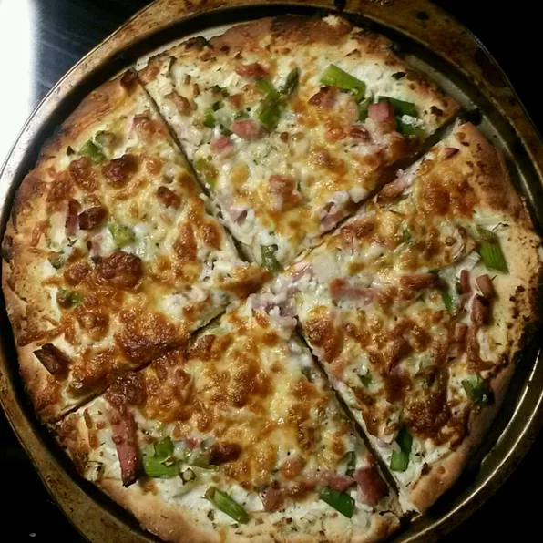

Pizza

Description
This homemade pizza uses pre-made pizza bases (from any supermarket) along with toppings of your own choice.
The toppings below are our suggestion but can be replaced with anything you prefer.
Ingredients
- Pizza base
- Dolmio Sauce (approx 100ml)
- Grated Cheese
- Sweetcorn
- Onion
- Cooked Ham
- Condiments such as paprika, turmeric, black pepper/li>
Steps
- Turn on the oven to pre-heat at 140 degrees, then wash your hands you filthy animal
- Remove packaging from pizza base and place on an over rack on the worktop
- Using a spoon, spread the Dolmio sauce evenly across the base
- Chop the onions and scatter evenly, along with the sweetcorn
- Dice the ham before sprinkling/scattering across the pizza
- Sprinkle chosen condiments such as paprika, turmeric and pepper
- Finally add plenty of grated cheese - don't be shy here
- Place in over and cook for 15 minutes
- Remove from oven, cut into slices and enjoy (but don't burn ya mouth!)